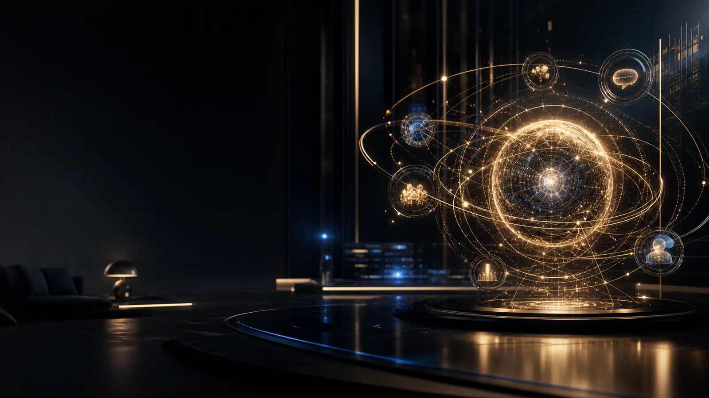
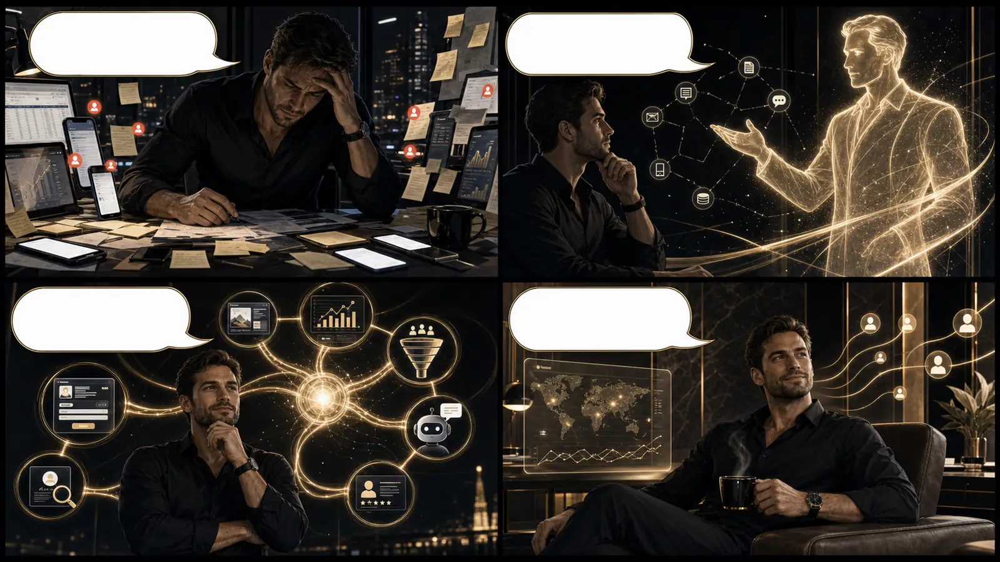

Внедрение под ключ
Мы проектируем связку под вашу нишу, подключаем сервисы, обучаем ассистентов, тестируем сценарии и передаём рабочую систему.

Нейросети создают контент, приводят трафик, ведут клиента по воронке, отвечают и превращают интерес в заявку — пока вы управляете бизнесом.
Обычно бизнесу не не хватает инструментов. Ему не хватает связи между ними. Нажмите на сцены — в них спрятана логика перехода к системе.

Каждый модуль решает отдельную задачу, но эффект появляется в связке. Откройте узлы: за изучение начисляются IQ-баллы.
+5 IQ за каждый изученный модуль. Баллы начисляются один раз.
Не продаём «ИИ вообще». Вы выбираете скорость, степень участия и ближайший бизнес-результат.
Мы проектируем связку под вашу нишу, подключаем сервисы, обучаем ассистентов, тестируем сценарии и передаём рабочую систему.
Пошагово собираете контент, воронки и автоматизацию вместе с сообществом, готовыми ролями, разборами и практикой.
8 коротких вопросов покажут, где теряется рост: в контенте, трафике, воронке, диалогах или аналитике. Результат останется в браузере.
Пройдите диагностику или сразу разберите с нейроассистентом, какую часть маркетинга и продаж выгоднее автоматизировать первой.